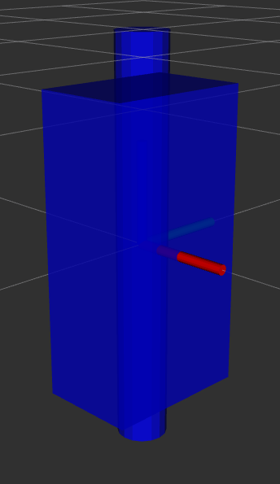
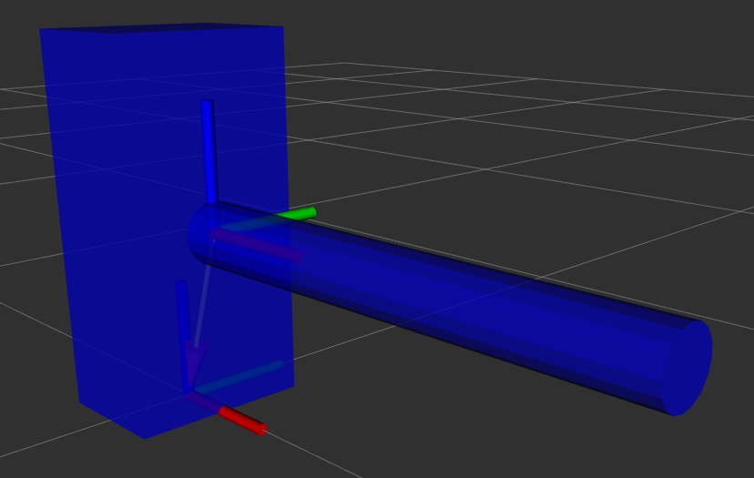
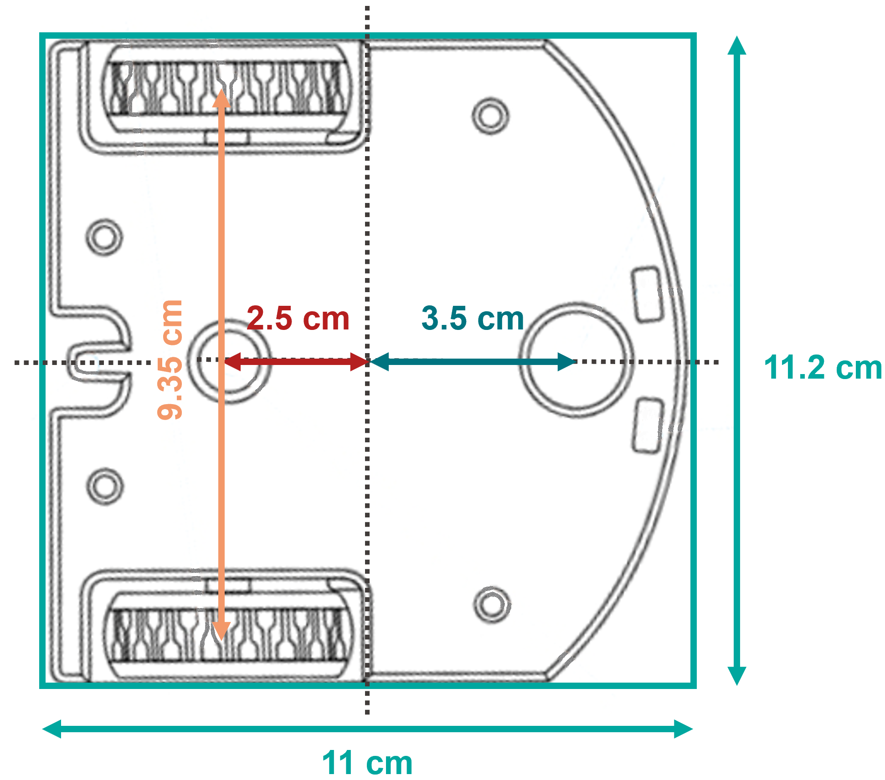

Session 2
Introduction
Welcome to session 2 of our ROS2 Basics labs! Today, we will be exploring the visualization and simulation tools integrated with ROS2. In this session, we will dive into Rviz, Transforms (TFs), URDF, Xacro, parameters, launch files, and Gazebo, building the essential skills for designing and simulating robotic systems.
Our main goal for today is to create a model of the Thymio robot that is fully integrated with ROS2 and capable of smooth operation in Gazebo simulation. We will guide you step-by-step through the essential elements needed to achieve this. Starting with simple examples to introduce each concept, you will progressively build the Thymio model in parallel, gaining practical experience with each component as you go. Now, let’s get to work!
URDF Tutorial Example
In this first part of the session, we will start by exploring Rviz, a 3D visualization tool, and TFs (transform frames), which are essential for managing coordinate frames in ROS2. We will use an example URDF (Unified Robot Description Format) model to learn how to visualize and interact with a robot model in Rviz. Do not worry if these concepts do not fully make sense yet, we will go through each of them step by step throughout today’s session.
Let’s get started by ensuring that everything we need is installed and set up. The first step is to install the urdf_tutorial package. This package is not part of the default ROS2 installation, so let’s install it now.
Open a terminal and run:
sudo apt install ros-humble-urdf-tutorial && source /opt/ros/humble/setup.bash
Note
If you have been paying attention to the terminal messages, you may have noticed that this package is already installed in the Docker environment. Due to time considerations, we have not covered all the steps of the installation process. However, the following outlines the general procedure you can follow to install any new package in ROS2.
Step |
Task |
Command |
|---|---|---|
1 |
Update your package list |
|
2 |
Upgrade existing packages |
|
3 |
Install the desired package |
|
4 |
Source the ROS2 setup file |
|
5 |
Verify the package installation |
|
Let’s check where this package and others are installed:
cd /opt/ros/humble/share && ls
Navigate to the URDF folder of the urdf_tutorial package and check its content:
cd /opt/ros/humble/share/urdf_tutorial/urdf && ls
Among the files listed, you will see 08-macroed.urdf.xacro, which is the example we will use now.
Launch the example:
ros2 launch urdf_tutorial display.launch.py model:=/opt/ros/humble/share/urdf_tutorial/urdf/08-macroed.urdf.xacro
Now that Rviz is running and the robot model is loaded, let’s take a moment to explore what Rviz offers and why it is such a valuable tool in the ROS2 ecosystem. Visualizing the robot in a 3D environment provides an intuitive way to understand its structure, relationships, and interactions.
In particular, Rviz allows you to visualize:
Robot models: These are detailed representations of the robot’s physical structure.
Transforms frames (TFs): Coordinate frames that define the spatial relationships between different parts of the robot, essential for motion and interaction.
Sensors data: Information from sensors such as LiDAR, cameras, or depth sensors, displayed in real-time to help interpret the robot’s environment.
As you can see in the image below, Rviz offers a variety of default plugins that enable you to monitor different aspects of your system. These plugins can be accessed and added to your workspace by clicking the Add button in the Rviz interface.
{kind=link}
Rviz also allows you to interact with tools like the Joint State Publisher, a GUI that lets you manipulate the robot’s joints. This enables you to see how joint movements affect the robot’s structure.
A key question to consider here is: How does ROS2 determine the positions and movements of the different links relative to one another over time?
The answer lies in Transform Frames (TFs). These frames represent the spatial relationships (positions and orientations) between the robot’s parts and its environment. TFs enable ROS2 to continuously track how each part of the robot moves in relation to others. By maintaining structured relationships between frames, TFs play a crucial role in various robotic tasks.
Each frame has three axes: x (red), y (green), and z (blue), representing its orientation in 3D space. If you uncheck the RobotModel in Rviz, you can see that the TFs form a tree-like structure, showing how the robot’s rigid parts are connected.
To better visualize the TF hierarchy, you can use the view_frames tool provided by the tf2_tools package. Open a terminal and run:
cd ros2_basics_ws/
ros2 run tf2_tools view_frames
After about five seconds, a PDF will be generated in your workspace. This file provides a clear tree structure of the robot’s TFs. The base_link is the root of the TF tree, and all other frames are connected as branches. Each branch connects a parent link to a child link, meaning that if the parent link moves, the child link will move accordingly.
Now that you understand the purpose of TFs, you can experiment in Rviz to see how they work alongside the RobotModel. Start by focusing on the RobotModel:
Hide TFs and explore the
RobotModelby displaying all links or only a few.Adjust joints using the Joint State Publisher and observe changes.
Next, enable the TFs and hide the RobotModel to focus on the transform frames:
Display all or specific frames to examine their relationships.
Observe how frames update dynamically with joint adjustments.
By now, you should have a foundational understanding of Rviz and TFs. Here’s a quick recap:
Rviz is a visualization tool that helps display robot models, TFs, and many other essential elements .
TFs are essential for representing spatial relationships and movement between different parts of the robot.
These tools are invaluable for building and visualizing robot models in ROS2.
Let’s keep going! In the next chapters, we will dive deeper into understanding and working with URDF files to create our own robot model.
URDF Overview
In this introductory example, the need for TFs (Transform Frames) in robotics was highlighted. TFs play a crucial role in tracking the positions of different parts of a robot over time. They are essential for most control packages in ROS2 to function effectively.
For example:
Odometry in navigation requires the positions of the wheels to estimate a mobile robot’s pose.
Robotic arms need joint positions to calculate the pose of the end-effector.
In short, accurate TFs are vital for running a robot in ROS2. Fortunately, ROS2 handles the management of TFs. The only requirement is to provide a URDF file, which describes the robot’s elements in XML format.
A URDF, Unified Robot Description Format, consists of two main components:
Links: Represent the physical, rigid parts of the robot. These correspond to the
RobotModelin Rviz.Joints: Define the relationships between links and are used by ROS2 to generate TFs.
Links are the rigid bodies of a robot. They can be described using one of four geometry types:
Boxes
Cylinders
Spheres
Meshes
Note
In this class, only basic geometry shapes will be used. While meshes can be included in a URDF, they require a CAD-designed mesh file (e.g. an STL file). When using meshes, it is important to pay attention to scaling and orientation.
To fully define a link, three properties must be specified:
Visual: How the link appears in visualization tools.
Inertial: The physical properties (mass, center of gravity, etc.).
Collision: The geometry used for collision detection.
These properties will be introduced progressively throughout the session.

Joints define the connections between links. The most common types of joints in ROS2 are:
Fixed: No movement between the parent and child links.
Revolute: Rotation around a single axis within a defined range.
Continuous: Rotation around a single axis without limits.
Prismatic: Linear motion along a single axis.
A joint is always defined by its parent link and child link.

Minimal URDF - Visual
With the necessary theoretical background in place, it is time to create our first robot model. We will start by setting up a new package to develop the Thymio model. Following standard conventions, the package will be named <robot_name>_description and structured as a C++ package.
Create a new package:
cd ~/ros2_basics_ws/src/
ros2 pkg create thymio_description
Remove unnecessary folders:
cd ~/ros2_basics_ws/src/thymio_description/
rm -rf include/ src/
ls
Create directories for today’s materials:
mkdir -p urdf/example urdf/thymio launch rviz worlds
ls
Now, let’s build the package and verify its structure.
Build the package:
cd ~/ros2_basics_ws
colcon build --packages-select thymio_description
source install/setup.bash
By default, ROS2 stores all packages in the install directory. Inside, you will find your package along with a share directory.
Verify package installation:
cd ~/ros2_basics_ws/install/thymio_description/share/thymio_description
ls
Error
You will notice that the folders we created are missing. This means ROS2 cannot access them. To fix this, we need to update the CMakeLists.txt file to include these directories in the installation process.
Update CMakeLists.txt:
Add the following block above if(BUILD_TESTING):
install(
DIRECTORY urdf launch rviz worlds
DESTINATION share/${PROJECT_NAME}/
)
This command ensures the directories are installed at the correct location. Rebuild the package and verify again:
cd ~/ros2_basics_ws
colcon build --packages-select thymio_description
source install/setup.bash
cd ~/ros2_basics_ws/install/thymio_description/share/thymio_description
ls
Now, we are ready to create our first URDF file. We will start simple, defining a single box and displaying it in Rviz.
Create an example.urdf file:
cd ~/ros2_basics_ws/src/thymio_description/urdf/example
touch example.urdf
Fill the example.urdf file with the first link:
Define the structure of the URDF file
<?xml version="1.0"?> <robot name="example"> </robot>
This structure specifies the XML format and gives a name to the robot model.
Add a link with visual properties
<?xml version="1.0"?> <robot name="example"> <link name="base_link"> <visual> <origin xyz="0 0 0" rpy="0 0 0"/> <geometry> <box size="0.2 0.3 0.6"/> </geometry> </visual> </link> </robot>
The base_link is a standard name for the core element of a robot. Its dimensions are specified in meters. The origin uses xyz for position and rpy (roll, pitch, yaw) for orientation.
Note
Tags in XML must be opened (e.g.
<visual>) and closed (e.g.</visual>). If a tag is empty, it can be written as a self-closing tag (e.g.<box size="0.2 0.3 0.6"/>instead of<box size="0.2 0.3 0.6"> </box>).Visualize the box in Rviz
First, build the package. Since more components will be added shortly, it is convenient to use the
--symlink-installoption for quicker updates.colcon build --packages-select thymio_description --symlink-install source install/setup.bash
Warning
This command is useful when working with URDFs as it allows you to progressively verify your progress. However, remember to rebuild the package whenever you add a new file.
Now, we are ready to visualize the result. Use the urdf_tutorial package to launch the URDF in Rviz. Later, we will explore how to achieve this without relying on this package.
ros2 launch urdf_tutorial display.launch.py model:=/home/ubuntu/ros2_basics_ws/install/thymio_description/share/thymio_description/urdf/example/example.urdf
We have successfully created a box with dimensions: 20 cm in length (x-direction), 30 cm in width (y-direction), and 10 cm in height (z-direction). However, it appears with a default color in Rviz. Let’s modify it to add a custom color.
Warning
You can ignore the warning message in Rviz as it will be resolved shortly.
Add color to the visual
<?xml version="1.0"?> <robot name="example"> <material name="blue"> <color rgba="0 0 1 1" /> </material> <link name="base_link"> <visual> <origin xyz="0 0 0" rpy="0 0 0"/> <geometry> <box size="0.2 0.3 0.6"/> </geometry> <material name="blue"/> </visual> </link> </robot>
Colors are defined using the material tag. A common practice is to define colors at the top of the file and reference them by name in the visual tag. The color attributes include four arguments: rgb for red, green, and blue, and a for transparency.
View the result in Rviz using the same command as before (rebuilding the package is not necessary).
Fill the example.urdf file with the first joint:
To introduce joints, we will add a second link and then connect it to the base link.
Define a second link
<?xml version="1.0"?> <robot name="example"> <material name="blue"> <color rgba="0 0 1 1" /> </material> <link name="base_link"> <visual> <origin xyz="0 0 0" rpy="0 0 0"/> <geometry> <box size="0.2 0.3 0.6"/> </geometry> <material name="blue"/> </visual> </link> <link name="second_link"> <visual> <origin xyz="0 0 0" rpy="0 0 0"/> <geometry> <cylinder length="0.8" radius="0.05"/> </geometry> <material name="blue"/> </visual> </link> </robot>
Here, we have simply added a second link with a different shape. The name can be chosen arbitrarily. You can now try visualizing it in Rviz.
Error
The result cannot be visualized yet because unconnected links are not allowed. Let’s resolve this by adding a joint.
Create a joint between the links
<?xml version="1.0"?> <robot name="example"> <material name="blue"> <color rgba="0 0 1 1" /> </material> <link name="base_link"> <visual> <origin xyz="0 0 0" rpy="0 0 0"/> <geometry> <box size="0.2 0.3 0.6"/> </geometry> <material name="blue"/> </visual> </link> <link name="second_link"> <visual> <origin xyz="0 0 0" rpy="0 0 0"/> <geometry> <cylinder length="0.8" radius="0.05"/> </geometry> <material name="blue"/> </visual> </link> <joint name="second_link_joint" type="fixed"> <parent link="base_link"/> <child link="second_link"/> <origin xyz="0 0 0" rpy="0 0 0"/> </joint> </robot>
The second link has been added. Use a naming convention for the joint that makes it easy to identify. As mentioned earlier, a joint is defined by its type, parent link, and child link. Additionally, it includes an origin, which specifies its position and orientation relative to the parent link. Now, let’s visualize this in Rviz.
Set the origins
We have not discussed origins yet, as they can be a bit confusing when working with URDFs for the first time. To simplify, we will provide a straightforward approach to correctly position your links. This step is critical for creating a robot model that works accurately in simulation.
As mentioned earlier, ROS2 uses the URDF file to generate the robot’s TFs. If the joints are not properly placed, the TFs will also be misaligned, leading to unexpected behavior during simulation.
Let’s go through a simple four-step process to correctly position two links. Currently, our setup looks like this:
Our goal now is to replicate this:
For each of the following steps, update the code and visualize the result in Rviz. Reflect on the purpose of each origin setting. If you have any questions, don’t hesitate to ask, it is crucial to understand this process.
Set all origins to zero (this is already the case)
<origin xyz="0 0 0" rpy="0 0 0"/>
Set the origin for the visual of the base_link
<origin xyz="0 0 0.3" rpy="0 0 0"/>
Set the joint origin
<origin xyz="0.1 0 0.3" rpy="0 0 0"/>
Set the origin for the visual of the second_link
Rotation
<origin xyz="0 0 0" rpy="0 1.57 0"/>
Translation
<origin xyz="0.4 0 0" rpy="0 1.57 0"/>
Question: Which origin setting is most critical for ensuring that your robot’s movements and positions are accurately represented in ROS2 simulations?
Explore the different joint types
Now, let’s experiment with the two links by trying out different joint types. Simply replace the existing joint with one of the examples below. For each joint type, visualize the result in Rviz and use the Joint State Publisher GUI to observe how the parts move.
Revolute
<joint name="second_link_joint" type="revolute"> <parent link="base_link"/> <child link="second_link"/> <origin xyz="0.1 0 0.3" rpy="0 0 0"/> <axis xyz="1 0 0"/> <limit lower="-1.57" upper="1.57" velocity="10" effort="10"/> </joint>
Continuous
<joint name="second_link_joint" type="continuous"> <parent link="base_link"/> <child link="second_link"/> <origin xyz="0.1 0 0.3" rpy="0 0 0"/> <axis xyz="1 0 0"/> </joint>
Prismatic
<joint name="second_link_joint" type="prismatic"> <parent link="base_link"/> <child link="second_link"/> <origin xyz="0.1 0 0.3" rpy="0 0 0"/> <axis xyz="1 0 0"/> <limit lower="0.0" upper="0.5" velocity="10" effort="10"/> </joint>
{kind=link}
{kind=link}
Reaching this point means you now have a better understanding of what a URDF is. You are equipped with the essential tools to finally practice building your first robot model on your own. Let’s get started!
Thymio - Step 1
As mentioned in the introduction, today’s goal is to create a Thymio model that works well in simulation. In addition to building the model, you will set up custom methods to launch applications like Rviz and Gazebo, ensuring they function correctly with your robot. The task is divided into 10 steps, and the journey begins now with your first challenge: creating the visual representation of the Thymio using the tools just introduced.
Start by creating a new file named thymio.urdf in the /urdf/thymio directory. Use the provided specifications to guide you through the process, and remember to consistently use Rviz to visualize your progress.
Component |
Specifications |
Color |
|---|---|---|
Base link |
Box: Length = 11 cm | Width = 11.2 cm | Height = 4.4 cm Ground clearance: 4.5 mm |
White |
Caster wheel |
Sphere: Radius = 9 mm |
White |
Wheels |
Cylinder: Length = 1.5 cm | Radius = 2.2 cm |
Black |
Refer to the following drawing to correctly place the different links:
{kind=link}
Hints
The ground clearance information should be sufficient to define all the heights
Carefully consider where the TFs should be positioned (this is crucial!)
Use the following command to visualize the model in Rviz:
ros2 launch urdf_tutorial display.launch.py model:=/home/ubuntu/ros2_basics_ws/install/thymio_description/share/thymio_description/urdf/thymio/thymio.urdf
The final visual result should look like this:

Improved URDF - Xacro
Congratulations on completing the simplified Thymio model! Now, to prepare for the next step, consider this question: What happens if we change the dimensions of the base_link?
Try answering this by modifying the width of the base_link to 6.6 cm instead of 11.2 cm.
You will notice that the wheels are no longer correctly aligned with the sides of the base_link. This is because the current URDF uses hardcoded values. Any change to one dimension requires manual updates to other dependent dimensions. While manageable for a small file, this approach is likely to cause mistakes and become inefficient for larger models.
In programming, this problem is typically solved by using variables to define relationships between dimensions, ensuring automatic updates when one value changes. While URDF does not support variables, Xacro, an extension of URDF, solves this issue. Xacro allows for:
Parametrization: Define variables for dynamic adjustments.
Simplification: Use macros, constants, math operations, and conditional logic.
Modularity: Organize your robot description into multiple files.
To use Xacro, you write your file using its extended syntax and process it with the xacro tool to generate a complete URDF that ROS2 can use. Let’s apply this to our example and see how it works in practice.
Rename the file
First, rename the previous example file to include the Xacro extension: example.urdf.xacro
Xacro compatibility
To enable the use of xacro in our file, we need to adjust the robot tag as follow:
<robot name="example" xmlns:xacro="http://wwww.ros.org/wiki/xacro">
Mathematical operations
Xacro enables various mathematical operations, including the use of the constant pi, often needed for adjusting link orientations. For example, the second_link origin can be rewritten as:
<origin xyz="0.4 0 0" rpy="0 ${pi / 2.0} 0"/>
Variables
Variables can be defined like this:
<xacro:property name="base_link_length" value="0.2"/>
<xacro:property name="base_link_width" value="0.3"/>
<xacro:property name="base_link_height" value="0.6"/>
And used as shown here:
<box size="${base_link_length} ${base_link_width} ${base_link_height}"/>
Macros
Xacro supports defining reusable functions called macros. For example, a macro to define a box with length, width, and height as parameters can be written as:
<xacro:macro name="box" params="length width height">
<box size="${length} ${width} ${height}"/>
</xacro:macro>
You can then call it at the desired location with the required parameters:
<xacro:box length="${base_link_length}" width="${base_link_width}" height="${base_link_height}"/>
Multiple files
To simplify the process, it is a good practice to split the URDF into multiple files. Typically, one main file includes all other Xacro files. To distinguish them, use the extension .urdf.xacro for the main file and .xacro for the others.
For example, let’s create a new file to define colors. Name it example_materials.xacro and save it in the /urdf/example directory. This file follows the same structure as the main file but does not include a robot name. Add the following content to the new file:
<?xml version="1.0"?>
<robot xmlns:xacro="http://wwww.ros.org/wiki/xacro">
<material name="blue">
<color rgba="0 0 1 1"/>
</material>
<material name="green">
<color rgba="0 1 0 1"/>
</material>
</robot>
You can include this file in other files using:
<xacro:include filename="example_materials.xacro"/>
Note
When including multiple files:
<xacro:include filename="file1.xacro"/>
<xacro:include filename="file2.xacro"/>
The second file can use variables or materials defined in the first file because it is included beforehand. You do not need to re-include file1.xacro in file2.xacro.
example.urdf.xacro
Below is the final version of the improved URDF file:
<?xml version="1.0"?>
<robot name="example" xmlns:xacro="http://wwww.ros.org/wiki/xacro">
<xacro:include filename="example_materials.xacro"/>
<xacro:property name="base_link_length" value="0.2"/>
<xacro:property name="base_link_width" value="0.3"/>
<xacro:property name="base_link_height" value="0.6"/>
<xacro:property name="second_link_length" value="0.8"/>
<xacro:property name="second_link_radius" value="0.05"/>
<xacro:macro name="box" params="length width height">
<box size="${length} ${width} ${height}"/>
</xacro:macro>
<link name="base_link">
<visual>
<origin xyz="0 0 ${base_link_height / 2.0}" rpy="0 0 0"/>
<geometry>
<xacro:box length="${base_link_length}" width="${base_link_width}" height="${base_link_height}"/>
</geometry>
<material name="green"/>
</visual>
</link>
<link name="second_link">
<visual>
<origin xyz="${second_link_length / 2.0} 0 0" rpy="0 ${pi / 2.0} 0"/>
<geometry>
<cylinder length="${second_link_length}" radius="${second_link_radius}"/>
</geometry>
<material name="blue"/>
</visual>
</link>
<joint name="second_link_joint" type="fixed">
<parent link="base_link"/>
<child link="second_link"/>
<origin xyz="${base_link_length / 2.0} 0 ${base_link_height / 2.0}" rpy="0 0 0"/>
</joint>
</robot>
Note
Notice that the file no longer contains hardcoded values. Instead, five variables are used to define the links and joint accurately. While using a macro to define a single box may be excessive here, it serves to demonstrate how macros work.
Thymio - Step 2
Let’s put this knowledge into practice. The goal is to enhance the previous URDF by utilizing Xacro’s features. Follow these steps:
Use the pi constant where needed
Define variables and replace hardcoded values
Create a macro for the wheel links and reuse it for both wheels
Split the URDF into three files: materials.xacro, thymio_chassis.xacro, and thymio.urdf.xacro
Additionally, remember to apply mathematical operations wherever possible.
Once again, refer to the drawing below for the key dimensions:
Hints
Eight variables are sufficient to define all links and joints:
base_length,base_width,base_height,ground_clearance,caster_wheel_radius,wheel_radius,wheel_width,wheel_offsetSome variables can depend on others
Position the caster wheel and wheels relative to the base’s length and width
The final visual, with the
base_lengthincreased and thebase_widthreduced by a factor of two, should appear as follows:
{kind=link}
Parameters Overview
Let’s take a break from URDFs for a moment and explore another essential concept in ROS2: parameters. Parameters are configurable values that allow to reuse the same node with differents settings.
To understand their importance, let’s revisit an example from the previous session: the Heat Index Monitoring System. We used a temperature sensor and a humidity sensor to calculate the heat index. Now, imagine we want to extend this setup by adding a second temperature sensor, but with different settings, such as a unique publish frequency.
What happens if we try to achieve this without parameters? We might end up duplicating the existing node just to adjust the frequency. This approach quickly becomes inefficient and difficult to manage as the system grows in complexity.
Fortunately, ROS2 parameters provide an elegant solution. They let us configure settings, like the publish frequency, directly from the run command without modifying or duplicating the node’s code. A parameter passed as an argument dynamically updates a variable in the node, enabling efficient customization.
To summarize, ROS2 parameters enable:
Customization: Define robot-specific configurations (e.g. sensor settings)
Flexibility: Adjust node behavior without modifying or rebuilding the code
Efficiency: Reuse the same node with different parameter values
Let’s see how parameters work in practice by modifying the first publisher node we created in session 1. We will define the publish frequency as a parameter, allowing us to change its value directly when running the node from the terminal.
Open the file
Open publisher.py in the ros2_basics_pkg package.
Modify the publisher
Replace the contents of publisher.py with the following code:
import rclpy
from rclpy.node import Node
from std_msgs.msg import String
class MinimalPublisher(Node):
def __init__(self):
super().__init__('minimal_publisher')
self.publisher_ = self.create_publisher(String, 'topic', 10)
self.declare_parameter("publish_frequency", 1.0)
self.publish_frequency_ = self.get_parameter("publish_frequency").value
self.timer = self.create_timer(1.0 / self.publish_frequency_, self.timer_callback)
self.i = 0
def timer_callback(self):
msg = String()
msg.data = 'Hello World: %d' % self.i
self.publisher_.publish(msg)
self.get_logger().info('Publishing: "%s"' % msg.data)
self.i += 1
def main(args=None):
rclpy.init(args=args)
minimal_publisher = MinimalPublisher()
rclpy.spin(minimal_publisher)
minimal_publisher.destroy_node()
rclpy.shutdown()
if __name__ == '__main__':
main()
Question: What are the essential steps involved in working with a parameter?
Build the package
Test the publisher with different frequencies
Run the node and set the publish frequency using the following command:
ros2 run ros2_basics_pkg publisher_node --ros-args -p publish_frequency:=4.0
Question: What happens if no parameter value is provided during execution? Why?
Tip
You can verify the frequency at which messages are published using the following command: ros2 topic hz <topic_name>.